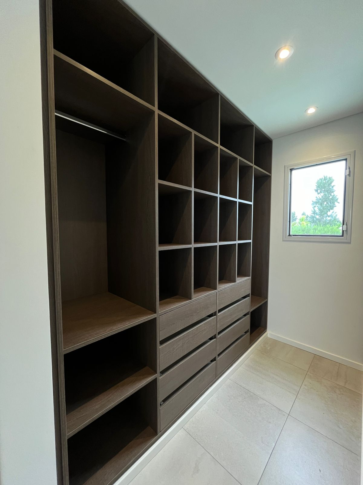
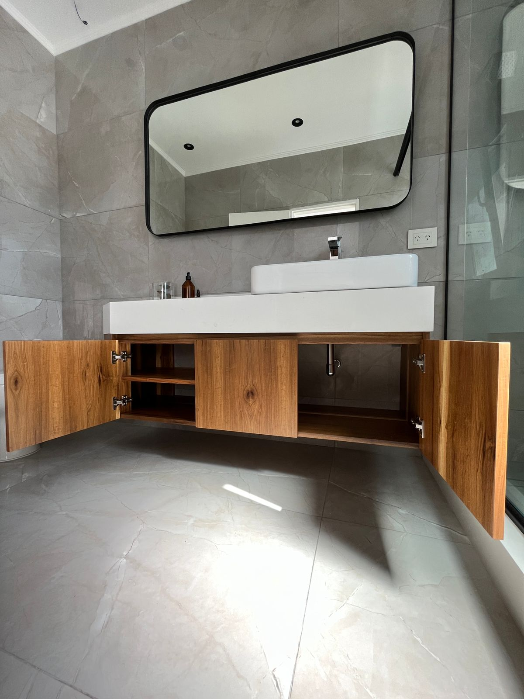

Clientes Satisfechos
Cliente: Javier Gutiérrez "Mi experiencia con el taller de carpintería ha sido sumamente positiva. Estoy extremadamente contento con el vestidor que diseñaron y construyeron para mí. La madera utilizada es de alta calidad, y la atención al detalle en los estantes y cajones es impresionante. Sin duda, recomendaré su taller a mis amigos y familiares.
Cliente: Ana Maria "Las puertas personalizadas suministradas por este gran equipo de trabajo, han superado mis expectativas en todos los aspectos. La artesanía refinada y el diseño cuidadoso se combinan para crear un producto final que refleja no solo la habilidad técnica, sino también un sentido de estilo distintivo. Estoy encantado con el resultado y recomendaría este taller a quienes buscan soluciones de carpintería personalizadas y de alta calidad."
Cliente: Augusto Rodríguez "Quisiera expresar mi gratitud por la excepcional obra realizada en mi baño por los carpinteros. Los muebles a medida no solo cumplen con mis necesidades funcionales, sino que también destacan por su estética moderna y durabilidad.
Cliente: Carlos López "¡Increíble experiencia con este taller de carpintería! Mi cocina personalizada es un sueño hecho realidad. Cada detalle fue cuidadosamente diseñado y la calidad de la madera es excepcional. ¡Gracias por transformar mi cocina en un espacio funcional y hermoso!"
Cliente: Luisa Cárdenas "Como profesional que valora la funcionalidad y la estética en el entorno de trabajo, estoy impresionada con el escritorio personalizado proporcionado por Zanino Amoblamientos. La combinación de diseño único y calidad de construcción demuestra un compromiso innegable con la excelencia. Mi escritorio no solo cumple con mis requisitos prácticos, sino que también agrega un toque distintivo a mi espacio de trabajo. Gracias por su dedicación y profesionalismo."